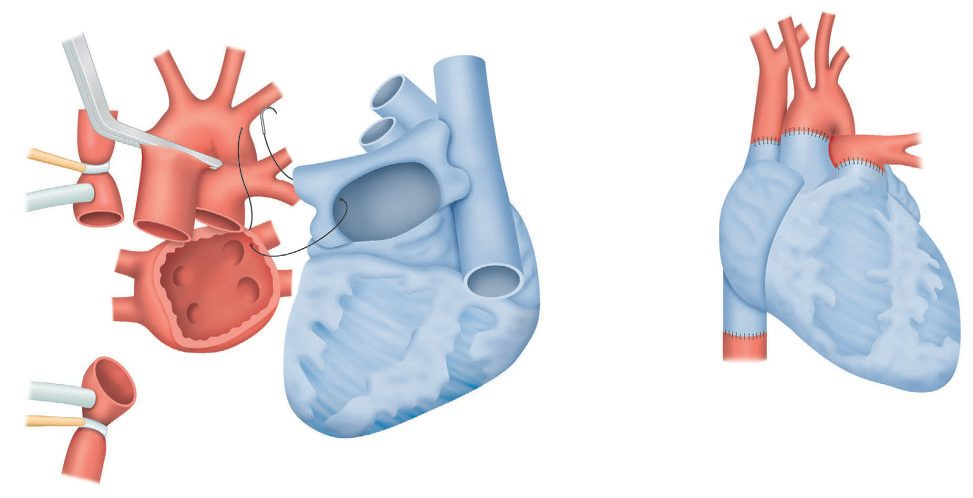
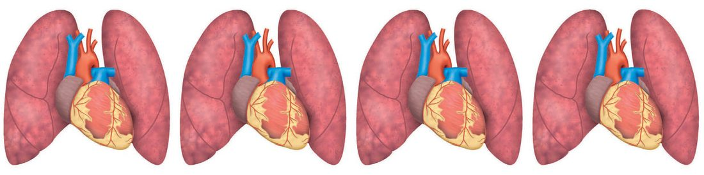

Heart and Lung Transplantation
Summary
- Thoracic transplantation is done for patients who will otherwise die soon: both heart and lung transplantation are for patients with a life expectancy under 1 year [1].
- Both organs tolerate only 6 hours of storage [1], which constrains everything about how they are allocated and retrieved.
- The two differ sharply in what eventually kills the graft: chronic allograft vasculopathy after heart transplantation, bronchiolitis obliterans after lung transplantation [1].
- Neither is offered re-transplantation for refractory rejection, because results are extremely poor [2].
Definition
Chronic allograft vasculopathy is progressive diffuse coronary atherosclerosis in the transplanted heart, and is the commonest cause of late death and of death overall after heart transplantation [1]. It is the heart's name for chronic rejection [2].
Bronchiolitis obliterans is the corresponding entity in the lung, and is likewise the commonest cause of late death and of death overall after lung transplantation [1].
Carrel and Guthrie performed a heterotopic animal heart transplant in 1905, Barnard the first adult human transplant in 1967, and Shumway at Stanford persisted through the poor early results while Caves introduced endomyocardial biopsy for rejection surveillance, so that with cyclosporine in 1981 heart transplantation became a viable answer to end-stage heart failure; Metras in France and Hardin and Kittle in the United States showed in the 1950s that meticulous canine anastomoses gave normal pulmonary pressures, Hardy's first human lung transplant (1963) survived 18 days, the first long-term success came in Toronto in 1983, and Cooper's group traced the epidemic of bronchial dehiscence to high-dose steroids acting on an ischaemic donor bronchus, protected the anastomosis with a vascularised omental wrap and then, once cyclosporine allowed steroids to be tapered off, made the first successful heart–lung transplant possible at Stanford in 1981 after failures by Cooley (1969), Lillehei (1970) and Barnard (1981) on steroids alone [3].
Pathophysiology
Both organs require ABO compatibility and a crossmatch [1], the liver's exemption does not extend to them.
Persistent pulmonary hypertension after heart transplantation is associated with early mortality [1]. It is the reason pulmonary vascular resistance is assessed before listing rather than after.
Reperfusion injury is the dominant early problem in the lung and is the leading cause of early mortality, treated much as ARDS is [1].
Clinical features
Acute rejection looks similar in both organs on biopsy and differs mainly in what else is present. In the heart it shows a perivascular lymphocytic infiltrate with varying grades of myocyte inflammation and necrosis; in the lung, perivascular lymphocytosis [1].
As with other organs, rejection is often clinically silent, patients may be asymptomatic or have only low-grade fever, malaise and tenderness over the graft, with biochemical or functional evidence of organ injury the first sign [2].
Aetiology
Indications for cardiac transplantation are end-stage heart disease with a life expectancy of 12 to 18 months; NYHA class III or IV heart failure refractory to medical or surgical therapy; and cardiomyopathy and congenital heart disease [2].
Lung transplantation is indicated in end-stage lung disease where conventional therapy is not likely to provide acceptable benefit or satisfactorily improve life expectancy [2]. Cystic fibrosis is the indication for double-lung transplantation [1].
Relative contraindications specific to thoracic transplantation are COPD with an FEV1 below 50%, and a pulmonary vascular resistance above 4 Wood units in heart transplants; also diabetes with target organ damage and lipid disorders refractory to diet or therapy for the heart, and continued smoking for heart or lung [2].
Heart transplantation is most often for ischaemic dilated cardiomyopathy, then idiopathic dilated cardiomyopathy and congenital disease, with about 3000 listings a year; lung transplantation is for congenital disease, emphysema and COPD (nearly a third of the roughly 1600 annual listings), cystic fibrosis (next commonest), idiopathic pulmonary fibrosis, primary pulmonary hypertension, α1-antitrypsin deficiency and retransplantation after primary graft failure, ranked since 2005 by the lung allocation score, the average candidate needing 4 L/min or more of oxygen at rest with poor pulmonary function and 6-minute walk results; heart–lung transplantation (30–50 listings a year) is chiefly for idiopathic pulmonary fibrosis then primary pulmonary hypertension in younger patients [3]. Schwartz's thoracic chapter adds that single-lung transplantation suits IPF and older COPD patients, bilateral transplantation younger COPD patients, α1-antitrypsin deficiency with severe hyperinflation, most primary pulmonary hypertension and almost all cystic fibrosis, and heart–lung transplantation only irreversible ventricular failure or uncorrectable congenital heart disease; COPD is listed when FEV1 falls below 25% predicted (earlier with pulmonary hypertension), IPF when FVC falls below 60% or DLCO below 50%, and primary pulmonary hypertension, now almost universally treated with intravenous epoprostenol, which lowers pressures and improves exercise capacity, is listed only at NYHA III–IV symptoms or a mean pulmonary artery pressure above 75 mmHg; waiting-list mortality is about 10% [4].
Diagnosis
Routine right ventricular biopsies are performed at set intervals to check for rejection after heart transplantation [1], the standard example of protocol surveillance biopsy in an organ where loss of function would be catastrophic.
The biopsy route differs between the two. Endoscopic biopsy is used in lung transplantation; transjugular biopsy in heart transplants [2].
Heart candidates have echocardiography, right and left heart catheterisation, a search for occult malignancy with age-appropriate screening (mammography, colonoscopy, PSA), organ function tests, dental and psychosocial assessment, then a multidisciplinary selection conference and UNOS status-based listing; the donor is matched by status, size and blood group and judged by serology, echocardiography, chest film, haemodynamics and sometimes coronary evaluation for tolerance of up to 4 hours of cold ischaemia [3]. Lung candidates add full pulmonary function tests, 6-minute walk, chest CT, ventilation–perfusion scanning and arterial gases and must have adequate cardiac function; donors are matched for blood group and size (larger lungs for COPD, smaller for the restricted fibrotic chest), should have PaO₂ above 300 mmHg on 100% oxygen with PEEP 5 and ideally a normal chest film, though liberalised criteria now accept smokers, donors over 50 and positive Gram stains or infiltrates, living donors can give a lobe to a small recipient (two donors each giving a lower lobe achieve outcomes similar to cadaveric grafts in selected recipients), single-lung transplantation spreads the supply, and ex vivo "lung in the box" perfusion may rescue marginal grafts [3][4].
Thresholds and severity
Donor criteria are tighter for thoracic organs than for abdominal ones.
| Organ | Donor criterion |
|---|---|
| Heart | Age 1 month to 60 years, no known cardiac disease |
| Heart–lung | As for heart, plus no pulmonary disease or trauma, and acceptable pO2 and pCO2 on under 50% inspired oxygen |
Exclusion criteria for using donor lungs are aspiration, moderate to large contusion, infiltrate, purulent sputum, and a PO2 below 350 on 100% FiO2 with PEEP 5 [1].
Both organs can be stored for only 6 hours [1], against 24 hours for the liver and 48 for the kidney.
UK listing for a thoracic organ is a multidisciplinary decision rather than a referral. Potential recipients of heart or lung transplants (like those for liver and small bowel) are discussed in a multidisciplinary meeting of transplant surgeons, anaesthetists, physicians, transplant coordinators and specialist nurses, unlike kidney and pancreas candidates, who are typically assessed by their nephrologist and then referred to a transplant surgeon [2].
The patient is then told what being on the list requires of them: they receive a detailed explanation of the waiting list procedures, including their responsibility to be contactable and available for potential transplant at all times and their duty to inform the transplant team of any change in health; planned holidays can be permitted by temporary suspension from the list [2].
Re-transplantation is not offered for the heart or lung. It is occasionally performed after graft loss due to refractory rejection in other organs, but not for the heart and lung, as results are extremely poor [2].
Functional cardiopulmonary assessment such as CPEX, cardiac catheterisation and coronary angiography where indicated, and lung function tests are part of the routine transplant assessment [2].
Treatment and Management
Persistent pulmonary hypertension after heart transplantation is treated with inhaled nitric oxide, and with ECMO if severe [1].
Reperfusion injury after lung transplantation is treated similarly to ARDS [1], low tidal volume ventilation with permissive hypercapnia, as set out on the Surgical Critical Care page.
Acute rejection is managed as elsewhere, by increased immunosuppression with a steroid pulse, and rescue therapy with anti-thymocyte globulin if severe [2].
Procedural interventions
Right ventricular biopsy at set intervals is the defining recurring procedure after heart transplantation [1].
Retrieval follows the general cadaveric sequence, with the thoracic and abdominal teams coordinating: support is continued until both are ready, then heparin is given, the supracoeliac aorta cross-clamped, the ventilator stopped, cold perfusion established and ice slush poured into abdomen and thorax [2].
- Orthotopic heart transplantation excises the native heart leaving both cavae, a left atrial cuff, aorta and pulmonary artery; the left atrial anastomosis is done first, right inflow by bicaval anastomosis or right atrium to a right atrial cuff, then pulmonary artery and finally aorta, and after cross-clamp release inotropes (isoproterenol, dobutamine or adrenaline) are commonly needed for 3–5 days while the heart recovers from cold ischaemia; heterotopic "piggyback" transplantation beside the native heart is now rare given mechanical support for single-ventricle failure [3].
- Lung transplantation is single (via thoracotomy) or sequential bilateral (bilateral thoracotomies or a sternum-dividing clamshell), usually without bypass, transplanting the worse lung by V/Q scan first; after pneumonectomy protecting phrenic and recurrent laryngeal nerves and extrapericardial encirclement of the pulmonary veins and artery, occlusion of the main vessels tests the need for bypass (central or femoral); the donor lung arrives wrapped in iced gauze, the bronchial anastomosis is done first and covered with peribronchial tissue or pericardium, then artery and vein, the lung is de-aired with gentle insufflation before the last suture is tightened, at least two chest tubes are left and bronchoscopy clears blood and secretions [3].
- Postoperatively lung recipients need meticulous ventilation at minimum FiO₂ for a PaO₂ of 70 mmHg, extubation usually within 24–48 hours, repeated bronchoscopy for airway care and surveillance biopsy, and generous diuresis [3].


Complications
The commonest cause of early mortality differs between the two organs: infection after heart transplantation, reperfusion injury after lung transplantation [1].
So does the commonest cause of late death: chronic allograft vasculopathy after heart transplantation, bronchiolitis obliterans after lung transplantation, and in each case that same entity is the commonest cause of death overall [1].
Complication profile
Early heart complications are primary graft dysfunction, acute cellular or antibody-mediated rejection (monitored by drug levels and early endomyocardial biopsy; preformed or donor-specific antibodies are reduced by plasmapheresis or rituximab), right heart failure from pulmonary hypertension and infection, the commonest cause of first-year death, with drug nephrotoxicity, glucose intolerance, hypertension, hyperlipidaemia, osteoporosis, malignancy and biliary disease; late complications are transplant vasculopathy, progressive renal failure and, most commonly, malignancy (skin cancer and PTLD); accelerated coronary disease, presumed immunological, can begin within a year and is the third cause of death overall (after infection and acute rejection) and the leading cause after the first year, so screening continues at least annually [3]. Early lung complications are anastomotic stenosis, primary graft dysfunction in up to 20% without obvious cause (occult donor aspiration, infection, contusion or poor preservation) that may need ECMO, infection (hard in cystic fibrosis with multiresistant organisms) and rejection; most early mortality reflects primary graft failure from ischaemia–reperfusion injury, seen as interstitial and alveolar oedema with hypoxia and V/Q mismatch and driven by donor neutrophils and recipient lymphocytes; late complications are strictures (bronchoscopic dilatation), rare dehiscence, bronchiolitis obliterans and malignancy, bronchiolitis obliterans syndrome being the chief barrier to long-term survival, mostly chronic rejection with acute rejection episodes the main risk factor, but also aspiration, chronic infection, reperfusion injury and gastro-oesophageal reflux, suspected from a progressive fall in FEV1 on home microspirometry and confirmed by biopsy, and over 50% of recipients eventually develop graft dysfunction [3][4].
Outcomes
Median survival is 10 years after heart transplantation and 5 years after lung transplantation [1].
The gap between the two figures is largely the gap between chronic allograft vasculopathy and bronchiolitis obliterans, and neither has effective treatment, nor, for these two organs, the fallback of re-transplantation [1][2].
In 2016 3209 US heart transplants were performed and active listings had risen 57% since 2005; recipients transplanted in 2009–11 survived 90.1% at 1, 83.5% at 3 and 78.3% at 5 years, growing numbers passing 15–20 years with the first graft, especially without cellular or antibody-mediated rejection [3]. Primary lung recipients survive 83%, 62% and 46% at 1, 3 and 5 years against 64%, 38% and 28% after retransplantation; heart–lung recipients 66%, 48% and 39%, lung complications usually causing graft failure, with immunosuppression as for single thoracic organs and early steroid weaning; lung volume reduction surgery, by contrast, improved exercise capacity, lung function, quality of life and dyspnoea only in the heterogeneous apical-predominant emphysema subgroup of the 1218-patient NETT trial, gains fading toward baseline after 2 years with no survival benefit and more short-term morbidity and mortality (initial series 16.9% operative and 23% 1-year mortality) [3][4].
References
- The ABSITE Review, 2022, Ch. 12 Transplantation
- Oxford Handbook of Clinical Surgery, 5th ed., Ch. 20 Transplantation
- Schwartz's Principles of Surgery, 11th ed., Ch. 11, Figs. 11-25 and 11-26
- Schwartz's Principles of Surgery, 11th ed., Ch. 19, Chest Wall, Lung, Mediastinum, and Pleura
- Bailey & Love's Short Practice of Surgery, 28th ed., Ch. 92 Heart and lung transplantation